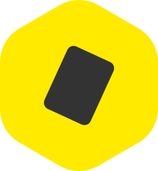

Ocard
for Business
Clear space
— ≥ the mark's own height on every side
Min size
— 20px tall (horizontal) / 32px (vertical)
Interior
— Ocard 為 #333333 傾斜卡片；OFB 為白色立方體，三面不透明度 100% / 75% / 50% 疊在品牌黃六邊形上（勿壓平成實色）
Never
— recolour, outline, rotate or add effects